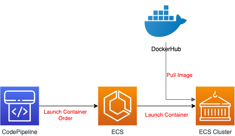

3. 20201214¶
3.1. パイプラインの構築（デプロイ編）¶
3.1.1. 基盤構築¶
自動化のためのCloudFormationテンプレート作成中
テンプレートファイルの分割方法とか
既存のリソース（VPCとかはすでにあるもの）を使う場合の書き方
基盤イメージ
テンプレート構成
templates
- vpc.yaml
- alb.yaml
- ecs.yaml
vpc
AWSTemplateFormatVersion: '2010-09-09'
Parameters:
VPCName:
Description: Target VPC Stack Name
Type: String
MinLength: 1
MaxLength: 255
AllowedPattern: ^[a-zA-Z][-a-zA-Z0-9]*$
Default: mynavi-sample-cloudformation-vpc
VPCCiderBlock:
Description: CiderBlock paramater for VPC
Type: String
MinLength: 9
MaxLength: 18
AllowedPattern: (\d{1,3})\.(\d{1,3})\.(\d{1,3})\.(\d{1,3})/(\d{1,2})
Default: 172.200.0.0/16
PublicSubnet1CiderBlock:
Description: CiderBlock paramater for VPC
Type: String
MinLength: 9
MaxLength: 18
AllowedPattern: (\d{1,3})\.(\d{1,3})\.(\d{1,3})\.(\d{1,3})/(\d{1,2})
Default: 172.200.1.0/24
PrivateSubnet1CiderBlock:
Description: CiderBlock paramater for VPC
Type: String
MinLength: 9
MaxLength: 18
AllowedPattern: (\d{1,3})\.(\d{1,3})\.(\d{1,3})\.(\d{1,3})/(\d{1,2})
Default: 172.200.1.0/24
Resources:
VPC:
Type: AWS::EC2::VPC
DeletionPolicy: Retain
UpdateReplacePolicy: Retain
Properties:
CidrBlock: !Sub ${VPCCiderBlock}
InstanceTenancy: default
EnableDnsSupport: true
EnableDnsHostnames: true
Tags:
- Key: Name
Value: !Sub ${VPCName}
PublicSubnet1:
Type: AWS::EC2::Subnet
UpdateReplacePolicy: Retain
DeletionPolicy: Retain
Properties:
CidrBlock: !Sub ${PublicSubnet1CiderBlock}
VpcId: !Ref VPC
AvailabilityZone: !Select [ 0, !GetAZs '' ]
Tags:
- Key: Name
Value: !Sub ${VPCName}-PublicSubnet1
PrivateSubnet1:
Type: AWS::EC2::Subnet
UpdateReplacePolicy: Retain
DeletionPolicy: Retain
Properties:
CidrBlock: !Sub ${PrivateSubnet1CiderBlock}
VpcId: !Ref VPC
AvailabilityZone: !Select [ 0, !GetAZs '' ]
Tags:
- Key: Name
Value: !Sub ${VPCName}-PrivateSubnet1
Outputs:
VPC:
Description: VPC ID
Value: !Ref VPC
Export:
Name: !Sub ${VPCName}-VPCID
PublicSubnet1:
Description: PublicSubnet1
Value: !Ref PublicSubnet1
Export:
Name: !Sub ${VPCName}-PublicSubnet1
PrivateSubnet1:
Description: PrivateSubnet1
Value: !Ref PrivateSubnet1
Export:
Name: !Sub ${VPCName}-PrivateSubnet1
PublicSubnet1Arn:
Description: PublicSubnet1Arn
Value: !Sub
- arn:aws:ec2:${AWS::Region}:${AWS::AccountId}:subnet/${PublicSubnet1}
- PublicSubnet1: !Ref PublicSubnet1
Export:
Name: !Sub ${VPCName}-PublicSubnet1Arn
PrivateSubnet1Arn:
Description: PrivateSubnet1Arn
Value: !Sub
- arn:aws:ec2:${AWS::Region}:${AWS::AccountId}:subnet/${PrivateSubnet1}
- PrivateSubnet1: !Ref PrivateSubnet1
Export:
Name: !Sub ${VPCName}-PrivateSubnet1Arn
3.1.2. アプリケーション¶
塾長のサンプルアプリを拝借 https://github.com/debugroom/mynavi-sample-continuous-integration/tree/develop
3.1.3. buildspec.yml¶
未実施
3.1.4. パラメータストア¶
未実施
3.1.5. 実行結果¶
未実施